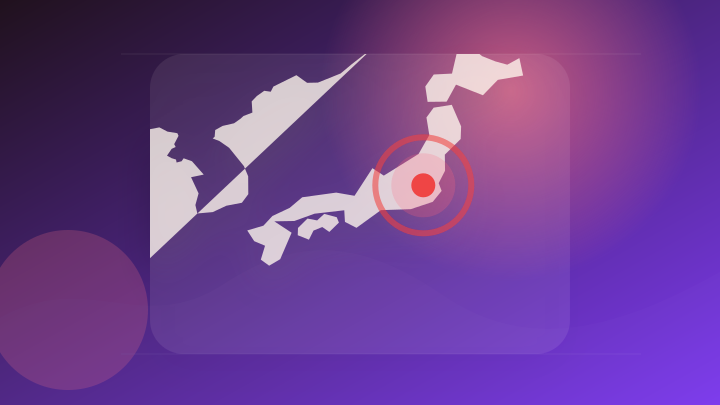
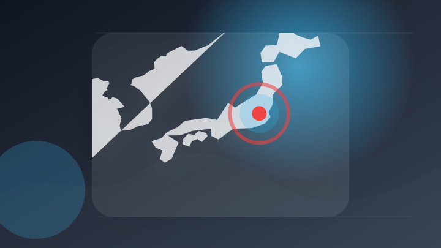
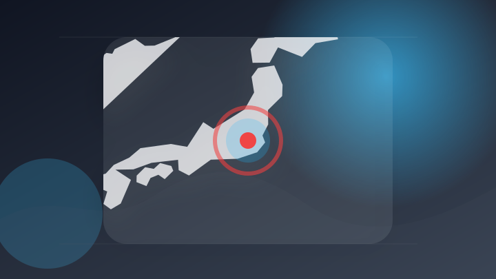
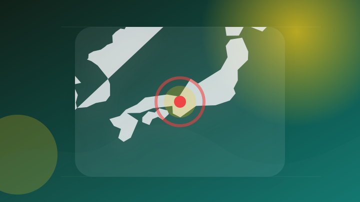
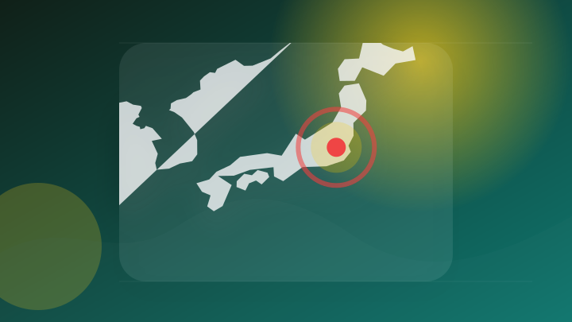
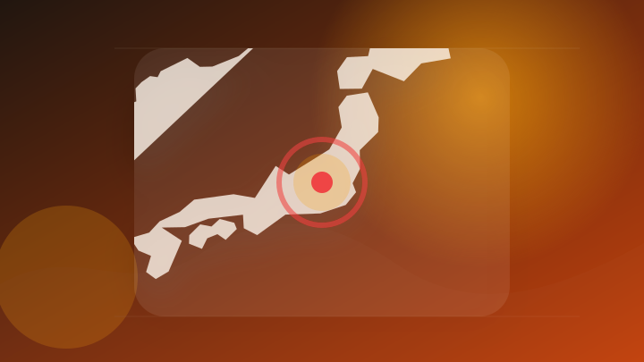
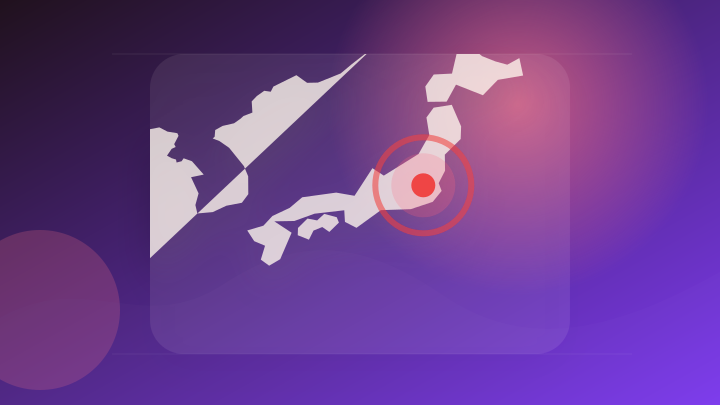

AI
6 topics

【AIが“穴”を探し出す】脆弱性発見AI「Mythos」が企業に問うもの
注目ポイント注目度 67点
アントロピックが自社人工知能(AI)モデルクロードが作った文とファイルに人の目に見えない「ウォーターマーク」を植えることにした。 欧州連合(EU)のAI規制を守るための措置で、AIが書いた文章を技術的..
アントロピックが自社人工知能(AI)モデルクロードが作った文とファイルに人の目に見えない「ウォーターマーク」を植え…
注目ポイント注目度 67点
Claude生成文章に“AIの証拠”が残る？アンソロピック、「電子透かし」を導入へ (ビジネス＋IT)
注目ポイント独立2媒体｜注目度 66点
ChatGPT DesktopがついにLinuxに上陸。Claudeからのインポート機能も
注目ポイント注目度 64点
OpenAIが作る“画面のないAI端末”。スマホ時代の次に来る「AIを持ち歩く時代」とは｜吉川真人＠中国テックトレンドニュース
OpenAIが作る“画面のないAI端末”。スマホ時代の次に来る「AIを持ち歩く時代」とは
注目ポイント注目度 61点
ChatGPTがBoat Traderでのボート購入支援を開始
注目ポイント注目度 61点
IT業界
5 topics
「Microsoft Edge」にセキュリティアップデート、脆弱性39件に対処 ～Criticalは5件／v151.0.4129.78が展開中
「Microsoft Edge」にセキュリティアップデート、脆弱性39件に対処 ～Criticalは5件／v151…
注目ポイント注目度 70点
Windows 11などに”緊急”の脆弱性 セキュリティ更新を今すぐチェック（2026年8月）（アスキー）
注目ポイント注目度 67点
Google、薄型・軽量化と高耐久を実現した折りたたみスマホ「Google Pixel 11 Pro Fold」
注目ポイント注目度 61点
アップル、セラミック製「Apple Watch」約7年ぶりに復活させる計画か（アスキー）
注目ポイント注目度 61点
【ビルボード】Mrs. GREEN APPLE「Brand New」ストリーミング・ソング4連覇 M!LK“さのじん”ユニット曲がトップ10入り
【ビルボード】Mrs. GREEN APPLE「Brand New」ストリーミング・ソング4連覇 M!LK“さのじ…
注目ポイント注目度 61点
政治
6 topics

高市氏贈呈メロンが物議 オーストラリア首相、番組で下品発言か
注目ポイント注目度 64点
中国の朱鎔基・元首相が死去 改革路線進めた「剛腕首相」
注目ポイント注目度 64点
高市首相、靖国参拝見送りの公算 終戦記念日、外交を考慮：時事ドットコム
注目ポイント注目度 64点
中国の朱鎔基元首相が死去、９７歳…強力な指導力で市場経済化を大胆に加速した「鉄腕宰相」
注目ポイント注目度 64点
朱鎔基・元中国首相が死去 97歳
注目ポイント注目度 61点

「性的意味合いない」と日本に釈明 豪政府、メロン巡る首相発言で（時事通信）
注目ポイント注目度 61点
社会
6 topics
イオン、「再入館認めた」として爆発事故で死亡した７人の遺族に補償行う方針…「法的責任の解明待たず対応」
注目ポイント注目度 70点

埼玉・飯能の遺体遺棄事件、ベトナム人の男を死体遺棄容疑で再逮捕…盗みに入り被害者と鉢合わせたため殺害か
注目ポイント注目度 70点
マンションで強盗・不同意性交容疑、男2人を逮捕 玄関から侵入か
注目ポイント注目度 70点

トカゲ密輸未遂容疑で男逮捕 1匹10万円? ペットで人気の希少種 [東京都]
注目ポイント注目度 70点
夏休みの子どもたちが模擬裁判を体験
注目ポイント注目度 64点
「利用者の人格踏みにじる」釧路の障がい者支援施設元職員による暴行事件裁判 検察が懲役1年6カ月を求刑
注目ポイント注目度 61点
事件・事故
3 topics
元プロテニスプレーヤーを別の詐欺未遂容疑で再逮捕【高知】（2026年8月12日掲載）｜RKC NEWS NNN
元プロテニスプレーヤーを別の詐欺未遂容疑で再逮捕【高知】（2026年8月12日掲載）
注目ポイント注目度 70点

捜査員の間で「やり手のプレーヤー 」と呼ばれる男（24）を逮捕 日本最大の風俗スカウトG「ナチュラル」のメンバー 職安法違反の疑い 警視庁
捜査員の間で「やり手のプレーヤー 」と呼ばれる男（24）を逮捕 日本最大の風俗スカウトG「ナチュラル」のメンバー…
注目ポイント注目度 70点
全仏オープンの元女王、平木理化容疑者を再逮捕「全く心あたりない」70代女性への詐欺未遂容疑
注目ポイント注目度 67点
芸能人の結婚・離婚・交際
1 topics
災害
5 topics
令和８年熊本地震非常災害対策本部会議
注目ポイント注目度 100点
【台風情報】"猛烈な勢力"に発達見込みの台風9号 最大瞬間風速75ｍは「鉄骨構造物が変形する」レベル 3日午前10時10分発表最新 いまどこ？ 予想進路図 気象庁発表
【台風情報】"猛烈な勢力"に発達見込みの台風9号 最大瞬間風速75ｍは「鉄骨構造物が変形する」レベル 3日午前10…
注目ポイント注目度 70点
土砂災害危険警報の発令に伴う警戒について
注目ポイント注目度 67点

前橋市災害警戒本部の設置
注目ポイント注目度 67点

台風17号の進路に注意 台風が次々発生 日本の南にモンスーンジャイア(気象予報士 吉田 友海 2026年08月12日)
台風17号の進路に注意 台風が次々発生 日本の南にモンスーンジャイア(気象予報士 吉田 友海 2026年08月12…
注目ポイント注目度 67点
科学
3 topics
【種子島宇宙芸術祭2026】チケット販売開始！宇宙に最も近い島・種子島の雄大な自然を舞台に多彩なジャンルの宇宙芸術を展開。自然が生み出した海蝕洞窟では幻想的なプラネタリウムも開催。
【種子島宇宙芸術祭2026】チケット販売開始！宇宙に最も近い島・種子島の雄大な自然を舞台に多彩なジャンルの宇宙芸術…
注目ポイント注目度 61点
情報地球科学研究部門の西川 悠 副主任研究員
注目ポイント注目度 60点
9/25（金）RISTEX共催「”科学技術をめぐる問い”に挑む──人文社会科学としてのELSI/RRI」【ELSIプログラム】
9/25（金）RISTEX共催「”科学技術をめぐる問い”に挑む──人文社会科学としてのELSI/RRI」【ELSI…
注目ポイント注目度 60点